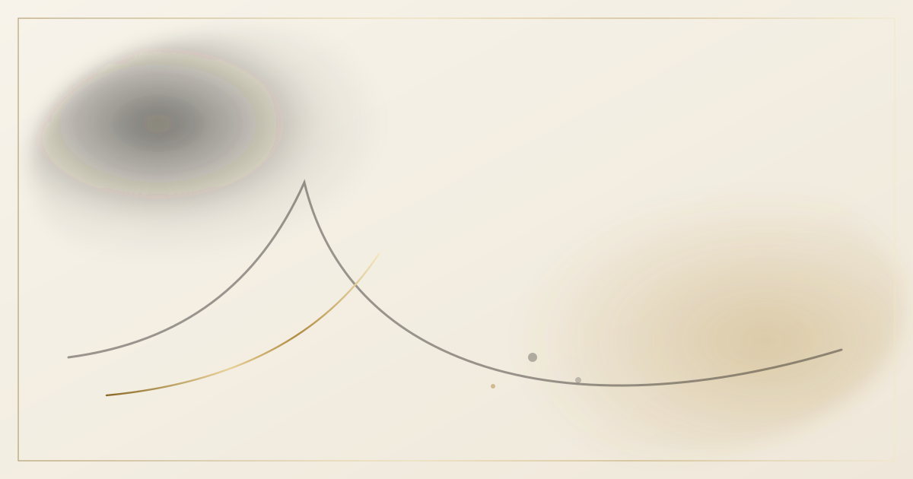

正文负责结论，推理过程负责可信度。
把两者混在一起，读者要么被细节淹没，要么无法验证结论。分开之后， 想深究的人可以展开，只想看结论的人可以跳过。
这个站点由 Inkstone 渲染 —— 一个用 Python 写的静态博客引擎。它只做三件事：读 Markdown、读配置、写出一坨可以直接丢到任何静态托管上的文件。
设计上我给自己定了三条约束：
- 零运行时依赖：产物是纯 HTML / CSS / JS，不依赖任何 CDN 才能跑起来；
- 可移植：所有站内链接都是相对路径，放在
/或/blog/或任何子目录都能直接用； - 可增量：重复构建时，未改动的文章直接复用缓存，不再走一遍渲染管线。
这篇文章分两部分：先讲引擎本身（构建管线、视觉语言、实现细节），再把它能渲染的东西 —— Markdown 的全部语法与「思维链」区块 —— 逐项跑一遍。既是介绍，也是一份可以对着抄的能力清单。
构建管线
从按下回车到产物落盘，一共十步。每一步都是独立的模块，可以单独替换：
| 步骤 | 模块 | 职责 | 增量策略 |
|---|---|---|---|
| 1 | engine/config.py | 配置合并、环境变量覆盖、校验 | — |
| 2 | engine/theme.py | 主题加载与元数据 | — |
| 3 | engine/content.py | Frontmatter 解析、文章图谱 | 文件 mtime + 内容哈希 |
| 4 | engine/assets.py | WebP 转换、响应式变体 | 源文件哈希 |
| 5 | engine/markdown.py | Markdown → HTML 渲染管线 | 文章签名 + 配置签名 |
| 6 | engine/search.py | 搜索索引与分片 | 每次重建（成本极低） |
| 7 | engine/builder.py | 静态资源压缩 + 指纹 | 内容哈希 |
| 8 | engine/builder.py | 页面渲染 | 复用第 5 步产物 |
| 9 | engine/feed.py | sitemap / RSS / Atom | 每次重建 |
| 10 | engine/plugins.py | 插件钩子与收尾 | — |
缓存的键是「文章内容哈希 + 资源映射哈希 + 相关配置哈希」。任何一项变了，这篇文章就会重新渲染；否则直接读上一次的 HTML 产物。
视觉语言
主题叫 ink，主色只有黑白两色，点缀交给「鎏银」：
- 纸：中性底色上叠一层 SVG 湍流噪声（
feTurbulence），暗色模式下换成screen混合，让页面带上一点纸面的颗粒感。 - 墨：Canvas 2D 画若干团缓慢漂移的径向渐变，作为背景的「墨云」；鼠标点击时墨点扩散成涟漪。
- 银：卡片、面板与正文图片用
mask-composite: exclude做出 1px 鎏银渐变描边，头像环与图片描边共用同一套金属渐变，悬浮时有一条高光扫过。 - 留白：正文默认全宽（阅读设置里可随时收窄），文章页把目录放在左侧悬浮栏、随滚动高亮；行距 1.7，中文排版不缩进，靠段间距呼吸。
所有视觉参数都在 config.yaml 与主题的 theme.yaml 里，改完重新构建即可；粒子密度、墨团数量、动效速度都能调。
Markdown 能力全景
下面把引擎支持的 Markdown 语法逐项跑一遍，方便写新文章时对着抄。
标题与目录
从二级标题开始会被收进左侧目录，最多到四级。标题的锚点会保留中文，### 标题与目录 的锚点就是 #标题与目录。
三级标题会缩进显示
四级标题再缩进一层
五级标题不进目录
文本样式
行内公式：质能方程 E = mc^2，以及范数 \|A_i + B_j\|^2。
块级公式
也可以写成单行形式：$k(A_i,B_j) = \exp(A_i) \ast \exp(B_j)$
列表
无序列表：
- 第一项
- 第二项
- 嵌套项
- 另一个嵌套项
- 第三项
有序列表：
- 定位问题
- 提出假设
- 设计对照实验
- 收敛结论
任务列表：
- 渲染管线
- 静态索引
- AVIF 输出
- 多语言互链
表格
| 内核函数 | 分解形式 | 语义 | 计算复杂度 |
|---|---|---|---|
| 加法平方欧氏距离 | |A|^2 + |B|^2 + 2A\!\cdot\!B | 同向证据检索 | O(L) |
| 减法平方欧氏距离 | |A|^2 + |B|^2 - 2A\!\cdot\!B | 对抗/矛盾检测 | O(L) |
| Hadamard Exp | \exp(A) \ast \exp(B) | 特征共激活 | O(L) |
| Softmax（标准注意力） | 不可精确分解 | 方向相似度 | O(L^2) |
代码块
带文件名与行号：
def build_search_payloads(context: SiteContext) -> dict[str, Any]:
"""生成索引数据（不落盘），便于测试与复用。"""
shard_size = max(1, int(config.get("shard_size", 100)))
entries, shards, current = [], [], []
for post in context.posts:
current.append({"id": post.id, "content": strip_markdown(post.raw_md)})
if len(current) >= shard_size:
shards.append({"entries": current})
current = []
return {"index": entries, "shards": shards}
可折叠的长代码块（点击标题栏展开/收起）：
name: Build and Deploy Blog
on:
push:
branches: [main]
jobs:
build:
runs-on: ubuntu-latest
steps:
- uses: actions/checkout@v4
- uses: actions/setup-python@v5
with:
python-version: '3.12'
- run: pip install -r requirements.txt
- run: python build.py
其他语言：
const state = { running: false, raf: 0 };
function loop(time) {
if (!state.running) return;
draw(time);
state.raf = requestAnimationFrame(loop);
}
site:
title: 墨痕
url: https://example.com
无语言标注的代码块会按纯文本处理。
引用与提示块
真正困难的部分不是把 O(L^2) 写成 O(L)，而是证明这样写出来的东西仍然是原来那个东西。
脚注
线性注意力最早的系统性讨论可以追溯到 Katharopoulos 等人的工作[1]，以及 Schlag 等人的「快速权重编程器」视角[2]。
定义列表
- 增量构建
- 只重新渲染输入发生变化的文章，其余复用上一次的产物。
- 资源指纹
- 按内容哈希重命名 CSS / JS 文件，使浏览器可以长期缓存它们。
图表
图片
覆盖文章的资源目录 assets/，正文里用相对路径引用即可，构建时自动转 WebP、生成响应式变体并懒加载：

双向链接
用 [[文章标题]] 或 [[文章标题|显示文字]] 建立链接，被引用的文章页面底部会自动出现「被引用」区块。比如指向 Exact Linear Attention。
如果目标不存在，会渲染成一个带删除线的失效链接，方便在写作阶段发现断链。
分隔线
思维链：让推理过程可以被查看，也可以被折叠
写技术文章时，最难的往往不是「说清楚结论」，而是「让结论可被检验」。结论写在正文里，推理过程折叠进 CoT 区块，是我目前找到的比较好的平衡。
引擎提供两种 CoT 写法。
写法一：正文内联容器
在需要的位置插入 :::cot 容器，容器内用三级标题切分步骤：
:::cot 为什么选择 Hadamard Exp 核
### 观察
候选核函数里，只有指数型同时满足非负性与精确可分解。
### 对比
加法/减法平方欧氏距离核可以分解，但值域为负，需要额外处理。
### 结论
选择 $\exp(A) \ast \exp(B)$，并在行方向做归一化。
:::
渲染结果如下：
观察
候选核函数大致可分四类：多项式型、指数型、非负周期型、绝对值型。要满足「精确可分解 + 充分可区分 + 非负 + 几何可解释」四条，可选范围迅速收窄。
对比
加法/减法平方欧氏距离核确实可以精确分解为 \|A\|^2 + \|B\|^2 \pm 2A\cdot B，但值域含负，作为注意力权重时需要额外处理，且几何解释偏「方向」而弱化「共激活」。
结论
选择 \exp(A_i) \ast \exp(B_j)。指数变换天然非负、处处可导，并且逐元素乘积刻画的是特征共激活强度，与余弦相似度关注的方向一致性互补。
代价
指数会放大数值范围，因此需要在特征维度上加约束（例如缩放或减均值），否则长序列上累积量会溢出。
写法二：Frontmatter 声明
如果推理步骤不适合插在正文中间，也可以写在 Frontmatter 里：
cot:
- title: 为什么要把推理过程单独拎出来
body: |
正文负责结论，推理过程负责可信度。
这种写法的区块会渲染在正文开头，位置由主题决定。
本文的 Frontmatter 就用了这种写法 —— 你可以在页面顶部看到它。
交互能力
每个 CoT 区块右上角有四个按钮：
| 按钮 | 行为 |
|---|---|
| 复制 | 把标题与全部步骤按 Markdown 格式写入剪贴板 |
| 导出 | 下载为 .md 文件，可直接归档进笔记系统 |
| 导图 | 用纯 SVG 画一张径向思维导图（不依赖任何外部库） |
| 隐藏 | 临时把这个区块从页面移除，专注读正文 |
点击标题栏可以整体折叠 / 展开。折叠状态下的高度过渡是用 max-height + opacity 做的，比 display: none 更平滑，也比 CSS Grid 的 0fr → 1fr 兼容性更好。
:::
### 为什么不直接用 `<details>`
原生 `<details>` 能实现折叠，但有三个问题：
1. 没法做高度过渡动画（内容高度未知）；
2. 折叠状态的样式在各浏览器上差异较大；
3. 想加「导出为 Markdown」这类操作时，得再包一层容器。
自己写一个 `section` 反而更简单 —— 而且反正 CoT 的 HTML 是构建期生成的，没有运行时开销。
### 和正文的关系
CoT 区块在 DOM 上是正文的同级兄弟节点，不在 `<p>` 内部，因此在打印样式里可以整块隐藏：
```css
@media print {
.cot { display: none; }
}
这样导出的 PDF 只有结论，不带推理草稿。
几个实现细节
渲染管线里有两处不太常见但值得说的做法。
代码块的行号
Pygments 的高亮输出里，一个 <span> 可能横跨多行（比如多行字符串）。直接按 \n 切分会切出未闭合的标签，于是需要一层「按行补全标签」的处理：
def _balance_spans(html_text: str) -> list[str]:
"""把可能跨行的 Pygments 输出切成行，并在行边界补全未闭合的 <span>。"""
lines: list[str] = []
open_tags: list[str] = []
...
for match in token_re.finditer(html_text):
chunk = html_text[pos : match.start()]
for i, piece in enumerate(chunk.split("\n")):
if i:
# 换行处：先把当前行已开启的标签全部闭合
lines.append("".join(current) + "".join("</span>" for _ in open_tags))
current = [tag for tag in open_tags]
current.append(piece)
容器的结束标记
markdown-it 的 paragraph 规则内部会用 state.lineMax 覆盖传入的 endLine。写自定义容器（:::note）时如果不先把 lineMax 收敛到容器结束行，正文就会把收尾的 ::: 一起吃进去：
old_line_max = state.lineMax
state.lineMax = found # 收敛到容器结束行，再嵌套解析
state.md.block.tokenize(state, start_line + 1, found)
state.lineMax = old_line_max
这种坑不写一遍是踩不到的，所以记在这里。
它不做什么
坦白说清楚边界比罗列功能更有用：
- 不做服务端渲染：没有 Node、没有 SSR、没有 hydration。归档页、时间线、搜索这些视图是纯客户端从一份 JSON 索引渲染的。
- 不做数据库：没有数据库，没有后端。评论走第三方（Giscus），统计走第三方（Umami / Plausible）。
- 不做富文本编辑器：写作入口就是
content/posts/<id>/index.md。
下一步
- 主题系统与
ink默认主题 - 静态搜索（分片索引 + 拼音 + Worker）
- 多层次时间线与写作热力图
- CoT 折叠展示与思维导图
- 图片 AVIF 输出
- 多语言文章互链
想看点更实在的，可以读 Exact Linear Attention。